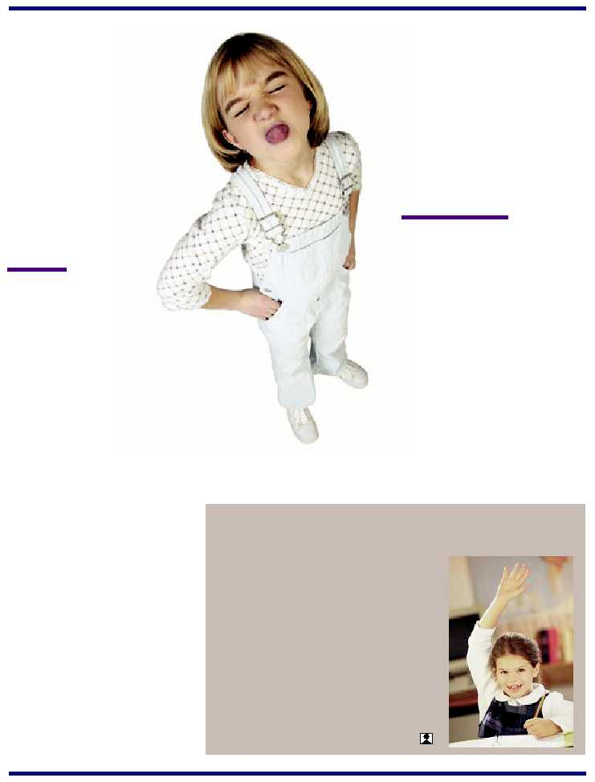

3
30 percent of students in
grades six through ten are
involved in moderate or
frequent bullying-as bullies,
as victims, or both.
BULLYING…Cont. from Page 1
Usually bullies have
no empathy for their
victims, so his tears,
pain or depression
motivates the bully to
continue rather than desist.
24, compared to 23 percent of boys who
were not characterized as bullies; 40 per-
cent had three or more convictions by
age 40.
Adults often see but dismiss the ma-
nipulative power and influence of cliques.
They may see the isolated child, a schoolyard
fight, even tears, but shrug these off as
typical childhood experiences—an all too
accepted rite of passage that supposedly all
children must undergo.
However, studies have found that chil-
dren who are bullied are five times more
likely to be depressed than other chil-
dren and are more prone to suicide.
It is also not surprising to learn
that 71 percent of the attackers
had themselves experienced severe and
long-standing forms of bullying—persecu-
tion, threats, harassment, verbal abuse and
physical attacks.
“This is for all the people who made
fun of us all these years,” Eric Harris and
Dylon Klebold said laughing as they fired
semi-automatic weapons and set off pipe
bombs, killing 12 fellow students, a
teacher and finally themselves. Once the
initial shock wore off, peers said they
weren’t surprised. “With all the animos-
ity between the various social groups at
Columbine, something like this was
bound to happen. It must have been hell
for them….”
For many people, the word “bully” con-
jures up not only a great deal of anger, but
also terrible long lasting memories of hu-
miliation, embarrassment and pain. Ms.
America, Ms. Erika Harold, recalls being
bullied in the ninth grade. “It started out
with people calling me names, and then it
got worse. They threw things at me, they
vandalized my house, and they sang nasty
songs about me in the hallways and class-
rooms. It got so bad that I felt like I was in
danger physically.”
A bully can spot a
victim a mile away.
Children who are
targeted most fre-
quently seem to
be those with
low self-es-
teem, few
friends and
who cry eas-
ily. Most vic-
tims
are
different
in
some way—and
a bully easily
spots and uses this. Some victims
may have a disability or are poor at sports.
They may be short or overweight, dress or
speak differently—or just new to the school.
Usually bullies have no empathy for their vic-
tims, so his tears, pain or depression motivates
the bully to continue rather than desist.
A bully may victimize someone because
he thinks it will make him more popular
with the “in” crowd or it may make him
appear tough, someone not to be messed
with. In addition, it may gain him the at-
tention he craves. Sometimes bullies are
jealous of the victim, or they themselves
had been bullied to the point where they
lash back—an act of desperation.
“When you feel like there’s no one who
cares about you or can help you, all you can
do is lash out,” said a student, referring to
the harassment aimed at Harris and Klebold
by the Columbine school jocks.
Since bullying often takes place when
adults are not present, and the victims are
fearful to tell anyone that they are being
bullied, it is difficult to identify the victims.
However, there are some non-verbal signs
for parents and teachers to look out for. For
BiNet, Inc. is a proud participant in the NYC
Department of Education’s “No Child Left Behind”
program. It is our first year as an approved vendor
providing supplemental education services to eli-
gible students in NYC Public Schools. BiNet’s
unique and customized tutoring programs focus
on the individual educational needs of students
through one-on-one or group instructions. Our
team of tutors, professional educators, and pro-
gram administrators are dedicated to the common
goal of helping students achieve academic im-
provement and scholastic success.
Cont’d. on page 4
NEWSNEWSNEWSNEWS
by Nancy Bruno